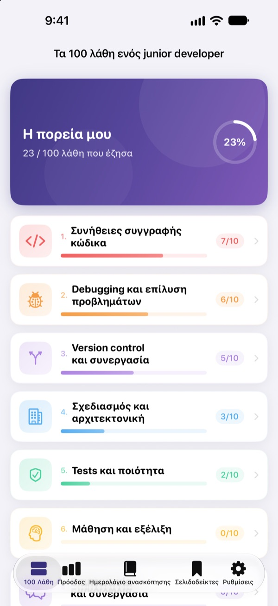
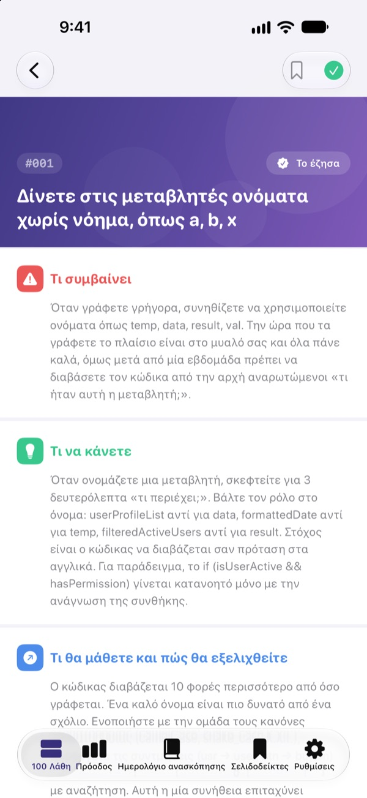
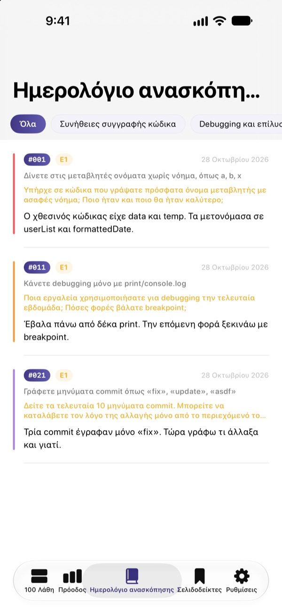
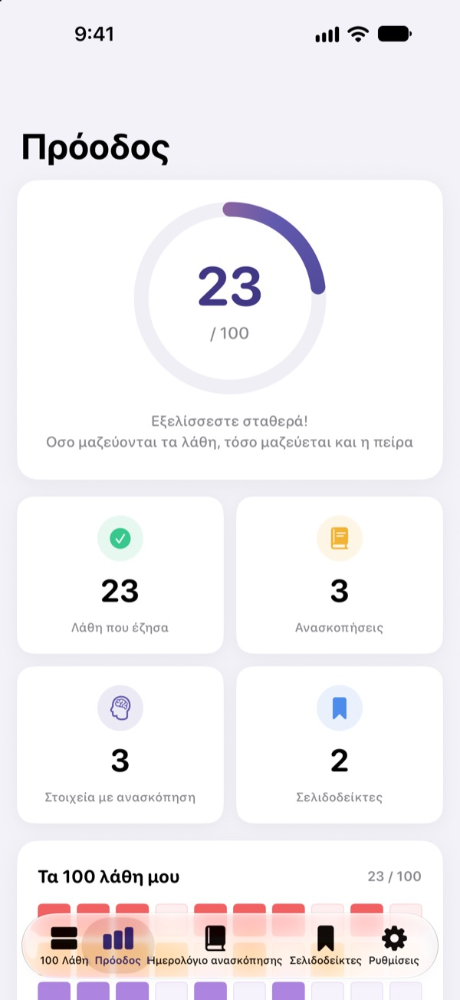

Μάθετε τα λάθη
πριν σας κοστίσουν
Τα 100 λάθη που κάνουν πιο συχνά οι αρχάριοι developers, σε ένα μέρος. Για το καθένα διαβάζετε τι συμβαίνει, τι να κάνετε και τι μαθαίνετε, και απαντάτε σε μια ερώτηση ανασκόπησης για να μην το επαναλάβετε.
Τα πρώτα 30 λάθη είναι δωρεάν. Σε iPhone, iPad και Mac.

Ανοίξτε ένα λάθος
Αυτά είναι τα 10 λάθη της πρώτης δωρεάν κατηγορίας, λέξη προς λέξη όπως στην εφαρμογή. Σημειώστε με «Το έζησα» όσα σας έχουν ήδη συμβεί.
Πάλι το ίδιο σχόλιο στο code review;
Ακατανόητα ονόματα μεταβλητών, συναρτήσεις 200 γραμμών, κώδικας με αντιγραφή-επικόλληση. Όλοι οι senior έχουν περάσει από εκεί, αλλά συνήθως το καταλαβαίνεις μόνο όταν σκοντάψεις. Το 100 Λάθη σάς δείχνει αυτά τα λάθη από πριν και σας βάζει να σκεφτείτε τη δική σας δουλειά, ώστε να μην τα επαναλάβετε.
Τι συμβαίνει, τι να κάνετε, τι μαθαίνετε
Κάθε λάθος εξηγείται σε τρία μέρη: τι συμβαίνει, τι να κάνετε και τι θα μάθετε.
Δέκα κατηγορίες, από τις συνήθειες συγγραφής κώδικα ως την ασφάλεια και την απόδοση, μόνο με λάθη που επαναλαμβάνονται σε πραγματικές ομάδες.

Ερωτήσεις ανασκόπησης για να μείνει
Κάθε λάθος έχει 4 ερωτήσεις ανασκόπησης, 400 συνολικά. Απαντήστε σκεπτόμενοι τα δικά σας έργα και ό,τι διαβάζετε γίνεται εμπειρία.
Οι απαντήσεις σας μαζεύονται στο ημερολόγιο ανασκόπησης ανά κατηγορία, για να τις ξαναδείτε όποτε θέλετε.

Δείτε πόσο έχετε προχωρήσει
Σημειώστε τα λάθη που έχετε ζήσει και η πρόοδός σας μεγαλώνει ανά κατηγορία και συνολικά. Βάλτε σελιδοδείκτη σε ό,τι θέλετε να ξαναδείτε.
Όλα συγχρονίζονται μέσω iCloud σε iPhone, iPad και Mac.

Τρία βήματα για να ξεκινήσετε
- 1
Διαλέξτε κατηγορία
Οι συνήθειες συγγραφής κώδικα, το debugging και το version control είναι ανοιχτά δωρεάν.
- 2
Διαβάστε και σημειώστε
Πατήστε «Το έζησα» στα λάθη που έχετε κάνει κι εσείς.
- 3
Κάντε ανασκόπηση
Γράψτε μια απάντηση, έστω σύντομη. Μπαίνει στο ημερολόγιο ανασκόπησης.
Οι 10 κατηγορίες
- Συνήθειες συγγραφής κώδικα
- #001–#010 · Δωρεάν
- Debugging και επίλυση προβλημάτων
- #011–#020 · Δωρεάν
- Version control και συνεργασία
- #021–#030 · Δωρεάν
- Σχεδιασμός και αρχιτεκτονική
- #031–#040 · PRO
- Tests και ποιότητα
- #041–#050 · PRO
- Μάθηση και εξέλιξη
- #051–#060 · PRO
- Επικοινωνία και συνεργασία
- #061–#070 · PRO
- Deployment και λειτουργία
- #071–#080 · PRO
- Ασφάλεια και δεδομένα
- #081–#090 · PRO
- Απόδοση και βελτιστοποίηση
- #091–#100 · PRO
Κάθε κατηγορία έχει 10 λάθη και κάθε λάθος 4 ερωτήσεις ανασκόπησης.
30 δωρεάν. Και τα 100 με το PRO.
Δωρεάν
- Οι πρώτες 3 κατηγορίες, 30 λάθη
- Οι 120 ερωτήσεις ανασκόπησής τους
- Λίστα ελέγχου, ημερολόγιο ανασκόπησης, πρόοδος και σελιδοδείκτες
- Συγχρονισμός iCloud (iPhone, iPad, Mac)
100 Λάθη PRO
- Οι άλλες 7 κατηγορίες, 70 ακόμη λάθη (#031–#100)
- 280 ακόμη ερωτήσεις ανασκόπησης
- Όλες οι μελλοντικές ενημερώσεις περιεχομένου
Μηνιαία ή ετήσια συνδρομή (έως 50% φθηνότερη από τη μηνιαία) ή εφάπαξ αγορά εφ' όρου ζωής.
Καμία συλλογή προσωπικών δεδομένων, χωρίς εργαλεία ανάλυσης και χωρίς διαφημίσεις.
Συχνές ερωτήσεις
Τι είναι δωρεάν;
Και τα 30 λάθη με τις ερωτήσεις τους στις κατηγορίες Συνήθειες συγγραφής κώδικα, Debugging και επίλυση προβλημάτων, Version control και συνεργασία. Η λίστα ελέγχου, το ημερολόγιο ανασκόπησης, η πρόοδος, οι σελιδοδείκτες και ο συγχρονισμός iCloud είναι επίσης δωρεάν.
Πώς χρησιμοποιώ το PRO σε άλλη συσκευή;
Συνδεθείτε με το ίδιο Apple ID και πατήστε «Επαναφορά αγορών» στην οθόνη συνδρομής.
Πώς ακυρώνω τη συνδρομή;
Οποιαδήποτε στιγμή από Ρυθμίσεις › Apple ID › Συνδρομές. Η συνδρομή ανανεώνεται αυτόματα, εκτός αν την ακυρώσετε τουλάχιστον 24 ώρες πριν λήξει η τρέχουσα περίοδος. Η αγορά εφ' όρου ζωής πληρώνεται μία φορά.
Τα δεδομένα δεν συγχρονίζονται μεταξύ συσκευών.
Ελέγξτε ότι όλες οι συσκευές είναι συνδεδεμένες στο iCloud με το ίδιο Apple ID και ότι το iCloud είναι ενεργό για αυτή την εφαρμογή στις Ρυθμίσεις. Για τον συγχρονισμό χρειάζεται και σύνδεση στο δίκτυο.
Πώς τα διαγράφω όλα;
Πατήστε «Επαναφορά όλων των δεδομένων» στις ρυθμίσεις της εφαρμογής. Σημειώσεις, απαντήσεις και σελιδοδείκτες διαγράφονται και δεν γίνεται αναίρεση.
Σε ποιες συσκευές λειτουργεί;
Σε iPhone, iPad και Mac. Το PRO ξεκλειδώνει σε όλες τις συσκευές με το ίδιο Apple ID.
Στέλνονται κάπου τα δεδομένα μου;
Όχι. Οι σημειώσεις και οι απαντήσεις σας μένουν μόνο στις συσκευές σας και στο δικό σας iCloud. Η εφαρμογή δεν συλλέγει προσωπικά δεδομένα και δεν έχει εργαλεία ανάλυσης ούτε διαφημίσεις.
Ερωτήσεις ή προτάσεις; Γράψτε στο leeo@kakao.com.